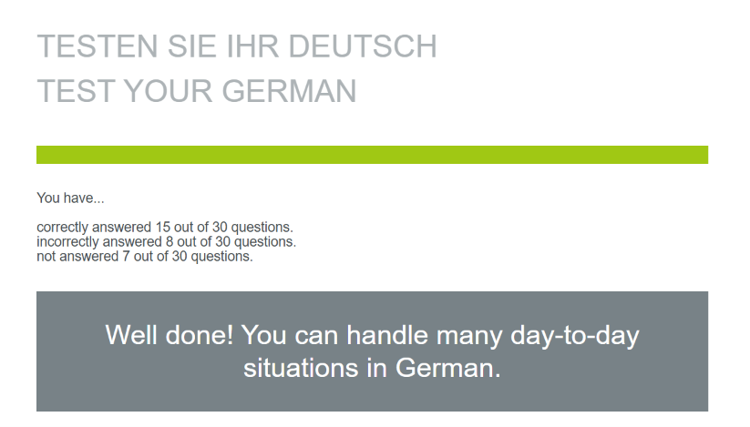

On this first day, I simply took a placement test through the Goethe-Institut (linked if you wish to try) to find out my current approximate German level. I mainly used context clues and filled in some blanks that I didn't know, so I think the score given might be somewhat presumptuous due to luck.
To see what I have learned up to this point, see the My Journey page.
In this upcoming month, I hope to learn about the accusative case, properly differentiating between kein and nicht, learn more vocabulary, and possibly touch up on different words' plural forms.